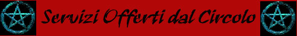

La
sede principale del Circolo dei Summoner si trova nella città di Pergar
all'interno della grande Torre di Klist.
La torre è enorme è fatta a tronco di cono. Il diametro alla base misura 65
metri ed è alta 100 metri. La parte inferiore (fino a trenta metri di altezza)
è interamente in pietra lavica nera e pietra normale, la parte restante
(costruita chiaramente in un momento successivo) è invece in marmo bianco.
Sulla vetta si trova il Grande
Circolo dei Summoner. Alla base della torre
vi è un enorme portale di rame (è infatti visibilmente rossiccio) con
raffigurati e scolpiti arcani simboli runici. Questo portale è sempre aperto e
attraverso la sua grande fessura possono passare agevolmente anche dei carri.
Una storia misteriosa
racconta che la prima parte della torre, il cui incredibile peso ha fatto calare
la struttura della piazza intera di due metri (la torre infatti si trova in un
avvallamento al centro della piazza), sia stato costruito addirittura intorno al
1300. Sembra che infatti intorno a
tale periodo esistesse un vulcano attivo in un isola a largo di Pergar a circa 4
km. dalla costa. Si narra che le popolazioni tribali che vivevano nella penisola
comandate da potenti stregoni (utenti di magia dell'antico metodo) lo
costruirono per evocare i demoni del fuoco a protezione o per chissà quale
scopo trasportando la pietra lavica da tale isolotto ora interamente sommerso.
Come abbiano trasportato tali rocce e con che criterio architettonico lo abbiano
costruito resta ancora un mistero. Con il passare dei secoli si ritiene che
questa zona sia divenuta la sede di un concilio che gli stregoni tribali
tenevano annualmente. Tutto ciò rimase inalterato fino a che nel 280 a.n. a
seguito della Guerra per le Scogliere
gli umani provenienti dal sud, guidati da Ilgadon, occuparono e civilizzarono
questa terra. Da allora divenne la sede delle tuniche rosse, ovvero dei
discepoli di quei maghi studiosi del richiamo della materia e degli esseri
viventi che erano stati scacciati dagli evocatori rimasti a sud in quanto fedeli
di Ilgadon.
I più famosi di questi
maghi erano tre, Alpha
il più intelligente e versatile ma isolato dagli altri maghi, Azalldam
ed Evards.
Costoro fondarono la scuola
che oggi è la più grande e importante scuola di magia umana, unica in grado di
competere con la magia elfica. Quando fu ultimata la città di Pergar intorno al
110 – 90 a.n. i maghi iniziarono la ristrutturazione e l’ampliamento della
torre. I lavori furono affidati al grande architetto, nonché summoner, Klist.
Costui riuscì ad ultimarla, ad una veneranda età (il grande architetto morirà
ufficialmente l'anno successivo alla fine dei lavori), dopo 56 anni di lavoro
(dal 73 a.n. al 17 a.n.). La Torre di Klist è considerata la più grande
e rappresentativa struttura di architettura umana del Sud-Arelia, simbolo della
grande Pergar capitale e ora simbolo della potenza dell'Impero Scuro.
I maghi del circolo sono
sempre stati inseriti nel contesto politico e sociale del Granducato di Karsar
(e ora dell'Impero Scuro) e devono rispettarne le regole e le leggi. In compenso
è ancora in vigore il vecchio Decreto Granducale sulle Arti Magiche
(emanato nel 23 p.n. inflictus) in base al quale tutte le disposizioni attinenti
alla magia valide all'interno del territorio del Granducato (ora dell'Impero
Oscuro) possono essere redatte solo dai tre Sublimi
Detentori del Gran Potere e poi approvate dal
Granduca (ora dall'Imperatrice Scura). In pratica in questo modo si è dato il
potere di iniziativa legislativa attinente alla magia ai capi della più
importante scuola di magia. Lo stesso decreto prevede la scelta libera sulla
partecipazione degli utenti di magia alle regole del Circolo del Potere.
I maghi del Circolo dei Summoner sono quindi, nella pratica, dei professionisti autonomi, che sono iscritti a questa grande scuola di magia (che rappresenta il loro potentissimo ordine professionale) e ne devono rispettare tutte le regole.
Una
volta terminato con successo il corso iniziale spetta a
loro conquistarsi all'interno del Circolo gli avanzamenti di carriera e se nel
caso cumulare, nel contempo, ruoli e cariche politiche di rilievo esterne al
Circolo stesso.
Per entrare nel circolo ci
sono due modi :
1)
Coloro che non sono maghi e vogliono imparare le arti magiche possono
studiarle presso il Circolo, per divenire mago si segue un corso a cui hanno
accesso trenta allievi, che prendono il nome di Allievi
Iniziati e vestono tuniche grigie semplici.
L'età massima per essere accettato come allievo è di 18 anni di età (per i
non-umani vigono regole differenziate per la razza). Il corso è gratuito e dura
tre anni durante i quali gli allievi vivono in collegio e studiano moltissimo.
La loro vita è tremendamente ristretta e controllata hanno poco tempo e si
vedono raramente fuori la torre. Sono scelti, ogni tre anni, fra coloro che
hanno presentato una domanda di partecipazione, mediante prove di intelligenza.
Dei 30 posti 5 sono liberi e 25 sono riservati alle diverse classi sociali (7
per i nobili , 15 per i sublimi, 3 per i comuni). Una volta che si partecipa
alla selezione non si può ripetere. A costoro , meglio a color di questi che
riusciranno a divenire maghi (solitamente non più di 9 - 10), verrà donato un
libro magico comune da 80 pagine. Costoro fanno parte del Circolo e devono
rispettare per sempre le sue regole, a pena di essere dichiarati rinnegati dal
Circolo stesso.
2) Per coloro che sono già
maghi e desiderano diventare membri del Circolo dei Summoner, nel rispetto delle
regole del Circolo del Potere, è previsto che ottengano il certificato
ufficiale di accettazione, in poche parole il mago
deve fare richiesta scritta (normalmente valutata in 2d6 mesi, al costo di una
tassa di 150 karsi per livello del richiedente) di voler entrare come socio
membro del circolo accogliendo tutte le regole e rispettando tutti i doveri di
membro. Qualora non si ottenga il gradimento non potrà riproporsi domanda di
gradimento prima che sia trascorso un anno dalla comunicazione del mancato
gradimento. Se ottiene il gradimento il mago riceve anche il grado di carriera
interno di partenza (non è possibile subordinare la richiesta di divenire
membro all'ottenimento di un determinato grado).
Fare parte del Circolo dei Summoner obbliga, dunque, i membri a rispettare alcune regole fondamentali inserite nella Carta di Fondazione del Circolo dei Summoner (oltre a tutte le regole del Circolo del Potere) ed a svolgere determinati compiti. I membri, però, ottengono una serie di diritti che vengono presentati all’aspirante membro prima della sua adesione. I membri del Circolo dei Summoner conservano questa qualità permanentemente, non essendo possibile alcuna forma di recesso dal contratto di adesione. E' solo possibile l'espulsione da parte del Circolo dei Summoner (in molti casi coincidente con una proposta di rinnegamento).
Tutti i membri
contribuiscono al Circolo con un contributo annuo fisso che varia al variare del
loro grado di carriera interno :
A
= 50 karsi
B
= 40 ducati
C = 100 ducati
D
= 150 ducati
E
= 300 ducati
F
= 500 ducati
Il pagamento di questo contributo è un obbligo e non da alcun diritto, non è possibile ottenere vitto e alloggio all'interno della Torre di Clist. Solo coloro che hanno raggiunto il grado di carriera interno E , F ed X hanno diritto al vitto e alloggio gratuito all'interno della Torre di Klist.
All’interno del circolo si fa carriera studiando la magia e acquisendo potere sempre maggiore, la carriera si basa puramente sugli studi magici che il mago compie a nulla servono le altre attività del mago.
Vige però una regola fondamentale in base alla quale non è possibile passare di grado superiore in carriera se non si è stati almeno un anno nel grado precedente, inoltre non è possibile saltare i gradi di carriera ma è necessario salire gradualmente dal primo all'ultimo grado.
I GRADI DI CARRIERA INTERNA
A* Studente delle energie naturali e degli esseri viventi :
Tunica rossa semplice senza bordo
Nessun
requisito tranne essere mago e essersi iscritto
B* Apprendista dell’uso della materia e del richiamo :
Tunica rossa semplice con bordo
blu
Livello
minimo di esperienza 3°
Maestro
del richiamo del primo livello di potere summonativo
Conoscitore
delle summonazioni e delle congiurazioni del secondo livello di potere
Scrivere
2 volumi sulle conoscenze magiche generali e donarli al Circolo con i diritti
senza pretendere alcun pagamento.
Una
Laurea riconosciuta dal Circolo dei Summoner
C* Esperto dell’uso della materia e del richiamo :
Tunica rossa di seta lucida con
bordo viola
Livello
minimo 5°
Maestro
del richiamo del secondo livello di potere summonativo
Conoscitore
delle summonazioni e delle congiurazioni del terzo livello di potere
Scrivere
1 volume di studi magici approfonditi e 1 volume specifico sulla scuola
conjuration\summoner e 1 volume di libreria generica per creare gli oggetti
magici e donarli al Circolo con i diritti senza pretendere pagamento.
Aver
cumulato un totale di 90 giorni di lezioni impartite per i training ufficiali
della Circolo dei Summoner.
Avere
ottenuto una seconda laurea riconosciuta dal Circolo
In base al Decreto
Granducale sulle Arti Magiche coloro che ottengono questo grado sono considerati
automaticamente sublimi.
D* Studioso dei fenomeni naturali e della soggiogazione delle creature:
Tunica rossa di seta lucida con bordo nero
Livello
minimo 7°
Sublime
Maestro del richiamo del primo livello di potere summonativo
Maestro
del richiamo del terzo livello di potere summonativo
Studente
del richiamo di quarto livello di potere summonativo
Aver
cumulato un totale di 210 giorni di lezioni impartite per i training ufficiali
della Circolo dei Summoner.
Scrivere
7 volumi sulle conoscenze magiche generali e donarli al Circolo con i diritti
senza pretendere pagamento insieme a 1 volume di studi magici approfonditi e 2
volumi specifici sulla scuola conjuration\summoner .
E*
Maestro della materia e della soggiogazione delle
creature :
Tunica rossa di seta lucida con bordo argento
Livello
minimo 9°
Sublime
Maestro del richiamo del secondo livello di potere summonativo
Maestro del richiamo del quarto livello di potere summonativo
Aver cumulato un totale di 360 giorni di lezioni impartite per i training ufficiali della Circolo dei Summoner.
Coloro che ottengono
questo grado sono riconosciuti automaticamente Maestri di Magia del Circolo del
Potere.
F*
Dominatore della massa materiale e del potere della servitù :
Tunica rossa di seta lucida con bordo in oro
Livello
minimo 11°
Requisito speciale : Donare al Circolo un oggetto magico di media potenza a durata permanente (non occorre donare la ricetta).
X* Sublimi Detentori del Grande Potere :
Tunica nere di seta lucida con bordo in oro
Sono considerati di diritto Sublimi Detentore del Grande Potere i primi due membri del Circolo in base a questi requisiti, valutati in ordine di priorità : Grado di carriera interno raggiunto, livello di esperienza raggiunto, età, data precedente di iscrizione al Circolo dei Summoner. A costoro si aggiunge il mago più anziano fra tutti i membri dal gradi D ai successivi (in caso di pari età la scelta prosegue secondo i criteri, in ordine di priorità, usati per la scelta dei primi due) .
Costoro hanno il controllo
dell’accademia e prendono tutte le decisioni a maggioranza nel rispetto della
costituzione.
Nell'anno 178 p.n. inflictus i 3
Sublimi Detentori del Grande Potere sono :
Krator Quarras :
Dominatore della massa materiale, livello 14 °
Griulan Sevinar
: Dominatore della massa materiale, livello 13 °
Krion Wisemind : Maestro della Materia, età 86 anni
I PERMESSI
DEL CIRCOLO
Con i permessi praticamente i tre
Sublimi Detentori del Grande Potere controllano il Circolo. Il permesso che si
vuole deve essere richiedere presso lo sportello giù al piano terra (non è
possibile mai chiedere direttamente ai Sublimi Detentori in base alle regole
accademiche) pagando 5 karsi + 2 karsi se non si hanno inchiostro e foglio. La
risposta si otterrà dopo 2d6 giorni.

All'interno del Circolo dei Summoner è abbastanza comune trovare maestri in grado di insegnare le magie vendute dalla stessa accademia di magia. Per determinare se vi è un maestro disponibile ad insegnare quella magia e di che livello di esperienza è costui si tiri consultando la seguente tabella. Si noti che il tiro può essere ripetuto per ogni singolo incantesimo solo il mese successivo. Il personaggio interessato a trovare un maestro che lo aiuti ad imparare una specifica magia dovrà innanzitutto verificare se durante quel mese vi è un maestro disponibile ad insegnare quella determinata magia. La percentuale di presenza varia a seconda del livello di potere della magia come indicato nella sottostante tabella. Il personaggio dovrà verificare prima con la percentuale maggiore. Se il maestro è presente, potrà tirare sulla percentuale minore per determinare se sia presente un secondo maestro e così via... Se sono presenti maestri occorrerà determinarne il livello. Il livello sarà determinato in base ai gradi totali di difficoltà (scuola primaria + scuola secondaria) dell'incantesimo consultando la seconda parte della tabella sottostante. Sarà effettuato un diverso tiro per ogni maestro presente. In ogni caso il maestro potrà essere del livello minimo di esperienza necessario a lanciare quell'incantesimo, di un livello superiore o di due livelli superiori a questo. Il personaggio può verificare la presenza di maestri per ogni diverso incantesimo desidera imparare. Si noti, però, che una volta effettuati i tiri per un incantesimo il personaggio potrà effettuarne uno nuovo (per il medesimo incantesimo) solo dopo che siano trascorsi 30 giorni.
| Livello di potere della magia | Percentuale mensile di presenza di un maestro disponibile |
| 1° livello di potere | 80% - 60% - 40% - 20% |
| 2° livello di potere | 70% - 50% - 30% |
| 3° livello di potere | 60% - 40% - 20% |
| 4° livello di potere | 50% - 25% |
| 5° livello di potere | 35% - 10% |
| Gradi di difficoltà totali | Tiro per determinare il livello di esperienza del maestro |
| 7 gradi | 1d10: 1 livello minimo / 2-3 +1 livello / 4-10 +2 livelli |
| 6 gradi | 1d10: 1 livello minimo / 2-4 +1 livello / 5-10 +2 livelli |
| 5 gradi | 1d6: 1 livello minimo / 2-3 +1 livello / 4-6 +2 livelli |
| 4 gradi | 1d6: 1 livello minimo / 2-4 +1 livello / 5-6 +2 livelli |
| 3 gradi | 1d6: 1-2 livello minimo / 3-4 +1 livello / 5-6 +2 livelli |
| 2 gradi | 1d6: 1-3 livello minimo / 4-5 +1 livello / 6 +2 livelli |
| 1 grado | 1d6: 1-4 livello minimo / 5-6 +1 livello |
I membri del Circolo hanno il dovere di chiedere le lezioni necessarie per il training di livello e il diritto di riceverle al Circolo del Potere. Ai membri del circolo dei Summoner è proibito insegnare la magia all'esterno del Circolo. Solo con uno specifico permesso del Circolo (giustificato da esigenze particolarissime) è possibile ricevere o dare gli insegnamenti all'esterno del Circolo. Per ottenere gli insegnamenti il mago effettua una richiesta formale al costo di 10 ducati per livello che vuole raggiungere al Circolo. Entro 1d10 giorni, dunque, il membro otterrà una risposta con l'indicazione del maestro e del periodo in cui costui è disponibile ad effettuare l'addestramento. Qualora l'allievo non sia soddisfatto, costui potrà ripetere la richiesta (pagando nuovamente il contributo) a partire mese successivo. Qualora, invece, l'allievo accetti il maestro deve impegnarsi ad iniziare l'addestramento alla data stabilita. Allievo e maestro possono utilizzare le strutture e i laboratori del circolo per effettuare gli insegnamenti ma sono tenuti a concludere l'insegnamento senza soluzione di continuità una volta iniziato. Se l'allievo non è disponibile al momento della chiamata del maestro dovrà ripetere la procedura e aspettare una nuova chiamata, lo stesso accade se l'allievo dichiara di non gradire quel maestro e aspettarne un altro, i maestri invece una volta inseriti nella lista per effettuare i training hanno l'obbligo di eseguirli senza poter rifiutare alcun allievo. Nella tabella che segue si può verificare i requisiti del maestro e l'attesa per la chiamata.
| Livello di esperienza da raggiungere | Tempo di attesa per la chiamata | Livello di esperienza del Maestro (1d6) |
| 2° livello | 1 mese + 1d2 mesi | (1-2-3) 3° livello (4-5) 4° livello (6) 5° livello |
| 3° livello | 1 mese + 1d3 mesi | (1-2-3) 4° livello (4-5) 5° livello (6) 6° livello |
| 4° livello | 1 mese + 1d4 mesi | (1-2-3) 5° livello (4-5) 6° livello (6) 7° livello |
| 5° livello | 1 mese + 1d6 mesi | (1-2-3) 6° livello (4-5) 7° livello (6) 8° livello |
| 6° livello | 1 mese + 1d8 mesi | (1-2-3) 7° livello (4-5) 8° livello (6) 9° livello |
| 7° livello | 2 mesi + 2d4 mesi | (1-2-3-4) 8° livello (5) 9° livello (6) 10° livello |
| 8° livello | 2 mesi + 2d6 mesi | (1-2-3-4) 9° livello (5-6) 10° livello |
| 9° livello | 3 mesi + 2d8 mesi | (1-2-3-4) 10° livello (5-6) 11° livello |
| 10° livello | 6 mesi + 2d8 mesi | (1-2-3-4) 11° livello (5-6) 12° livello |
Per verificare il grado interno del maestro si consideri che se costui è del livello esatto per un determinato grado (ad es. 3° livello per il grado B) vi è il 40 % che abbia anche quel grado altrimenti è del grado immediatamente inferiore, per ogni livello superiore al minimo richiesto vi è il 20% aggiuntivo cumulativo che costui abbia ottenuto quel determinato grado.
L'intelligenza del Maestro sarà (2d6) : (2) 12 (3) 13 (4) 14 (5-6) 15 (7-8-9) 16 (10-11) 17 (12) 18
La saggezza del Maestro sarà (2d8) : (2) 6 (3) 7 (4) 8 (5-6) 9 (7-8) 10 (9) 11 (10) 12 (11) 13 (12) 14 (13) 15 (14) 16 (15) 17 (16) 18
Vi è il 25 % che il Maestro abbia la competenza teaching (nessun costo aggiuntivo richiesto).
Il costo del maestro è stabilito politicamente dal Circolo ed è uguale a :
| Livello del Maestro | Costo Base Giornaliero |
| 1° livello | 2 karsi |
| 2° livello | 4 karsi |
| 3° livello | 7 karsi |
| 4° livello | 10 karsi |
| 5° livello | 15 karsi |
| 6° livello | 20 karsi |
| 7° livello | 30 karsi |
| 8° livello | 45 karsi |
| 9° livello | 95 karsi |
| 10° livello | 130 karsi |
| 11° livello | 160 karsi |
| 12° livello | 200 karsi |
Al costo per il livello va aggiunto il costo in base al grado di carriera interno :
| Grado del Maestro | Costo Supplementare Giornaliero |
| A | nessuno |
| B | 2 karsi |
| C | 5 karsi |
| D | 15 karsi |
| E | 25 karsi |
| F , X | 50 karsi |
Il training non è comprensivo di insegnamento di alcuno spell ed il 40 % del guadagno lordo del maestro viene devoluto al Circolo dei Summoner.
Regole per chi vuole insegnare
Qualsiasi mago dal 3° livello di esperienza in poi può iscriversi nelle liste per effettuare i training ad ogni inizio mese (sono accettate solo le domande presentate il primo giorno del mese), insegnare è quasi considerato un dovere sociale e i maghi che dedicano tempo per farlo acquistano molta considerazione. Quando ci si iscrive si deve restare disponibili per iniziare gli insegnamenti per tutto il mese (ogni mese c'è una certa possibilità di ottenere la richiesta per un training da parte di un membro del Circolo dei Summoner).
In base alle regole del Circolo si da la priorità ai maestri che sono iscritti nelle liste da più tempo con la sola eccezione che fra maestri di diverso grado interno ha sempre la priorità quello di grado superiore.
| Livello del Maestro | Possibilità base mensile di ottenere l'insegnamento | Livello che vuole raggiungere l'allievo |
| 3° livello | grado A 30 % grado B 45 % | 2° |
| 4° livello | grado A 35 % grado B 50 % | 1-2-3-4 2° 5-6 3° |
| 5° livello | grado B 40 % grado C 60 % | 1-2-3 2° 4-5 3° 6 4° |
| 6° livello | grado B 40 % grado C 60 % | 1-2-3 3° 4-5 4° 6 5° |
| 7° livello | grado C 35 % grado D 55 % | 1-2-3 4° 4-5 5° 6 6° |
| 8° livello | grado C 30 % grado D 50 % | 1-2-3 5° 4-5 6° 6 7° |
| 9° livello | grado D 25 % grado E 45 % | 1-2-3 6° 4-5 7° 6 8° |
| 10° livello | grado D 20 % grado E 40 % | 1-2-3 7° 4-5 8° 6 9° |
| 11° livello | grado E 15 % grado F 35 % | 1-2-3-4 9° 5-6 10° |
| 12° livello | grado E 10 % grado F 30 % | 11° |
La possibilità di ottenere l'insegnamento è aumentata 5 %sse il proponente conosce la competenza teaching.
La possibilità di ottenere l'insegnamento cresce del 2 % cumulativo per ogni mese consecutivo in cui si rinnova l'iscrizione nelle liste di insegnamento (fino ad un massimo di +20%) se non si rinnova anche per un solo mese questo bonus viene annullato (lo stesso accade dopo che si è ottenuto un training)..
Il tiro si effettua ogni inizio mese e il maestro deve iniziare il training (con la chiamata dell'allievo) entro la fine del mese in questione. Il maestro ha l'obbligo di portare a compimento l'insegnamento una volta iniziato.
L'intelligenza dell'allievo sarà (2d6) : : 2 12 3 13 4 14 5-6 15 7-8-9 16 10-11 17 12 18
LAVORARE PRESSO IL CIRCOLO
Tutti i maghi del Circolo dei Summoner possono lavorare all'interno del Circolo stesso. Questo è un vero e proprio diritto per tutti i maghi interni al Circolo. Per poter lavorare occorre presentarsi in accademia il primo giorno del mese (solo il primo giorno del mese si accettano le domande) e occorre mettersi a disposizione dell'accademia per l'intero mese in corso. La richiesta di ottenere un insegnamento (training) è alternativa al lavoro in accademia e con questa incompatibile. Al termine del mese di lavoro il mago otterrà uno stipendio che cresce a seconda del suo livello di esperienza e grado interno accademico.
| Livello del Mago | Stipendio mensile ottenuto |
| 1° livello | 35 karsi |
| 2° livello | 60 karsi |
| 3° livello | 85 karsi |
| 4° livello | 115 karsi |
| 5° livello | 165 karsi |
| 6° livello | 280 karsi |
| 7° livello | 450 karsi |
| 8° livello | 650 karsi |
| 9° livello | 1100 karsi |
| 10° livello | 1250 karsi |
| 11° livello | 1350 karsi |
| 12° livello o superiore | 1500 karsi |
| Grado Interno del Mago | Addizionale allo stipendio |
| A | Nessuna |
| B | + 10 karsi al mese |
| C | + 25 karsi al mese |
| D | + 50 karsi al mese |
| E | + 100 karsi al mese |
| F | + 200 karsi al mese |
STUDI NON MAGICI DEL CIRCOLO
Tutti i
membri hanno diritto a partecipare ai corsi, gli esterni (anche non maghi) devono
fare richiesta (costo 10 ducati, valutata in 2d6 giorni, e ripresentabile ogni
anno) per aver accesso ai corsi del Circolo.
Si
tengono dei corsi fissi e degli esami, non è obbligatorio seguire i corsi ma
occorre superare l’esame per ottenere la laurea (si tratta di un documento di
riconoscimento ufficiale del Circolo della propria bravura nella materia che ha
valore legale nell'Impero Oscuro e spesso anche all'estero, all'interno
dell'Impero, inoltre, è spesso requisito per svolgere alcune professioni come
quella di medico)
Gli
esami si possono sostenere dopo 3d20 giorni dalla prenotazione.
Per
poter fare l’esame si deve pagare una somma pari a 50 ducati , 150 per i non
membri.
Per
superare l’esame occorre avere la competenza e dimostrare di aver studiato
5 testi nella competenza e presentare un proprio
testo nella competenza stessa.
I corsi si tengono ogni giorno al costo di partecipazione di 1 karso al giorno, indipendentemente dalla bravura del maestro. Chi vuole aspettare che si liberi un nuovo maestro dovrà aspettare 1 mese. Si possono seguire quante lezioni si vogliono senza alcun limite.
L’abilità del maestro sarà
variabile (tira 2d6)
:
|
Tiro
Effettuato |
Punteggio in Abilità |
|
2 |
13
(20 karsi)
|
|
3 |
13
(20 karsi) |
|
4 |
14
(30 karsi) |
|
5 |
14
(30 karsi) |
|
6 |
15
(40 karsi) |
|
7 |
15
(40 karsi) |
|
8 |
16
(55 karsi) |
|
9 |
16
(55 karsi) |
|
10 |
17
(75 karsi) |
|
11 |
17
(75karsi) |
|
12 |
18
o superiore (100 karsi) |
Chi vuole fare il maestro in
una di queste materie potrà farlo se possiede una abilità minima di 13 nella
competenza e la laurea del circolo e dovrà insegnare al numero di allievi
massimi che può addestrare. Dovrà insegnare per un periodo minimo di 1 mese
(durante il quale dovrà dedicare all'insegnamento 25 giorni di lavoro) prorogabile di mese in mese e verrà pagato al mese la cifra tra parentesi sopra
a seconda della sua abilità (se si tratta di competenze che richiedono più di
uno slot si aggiungono +25 karsi al mese per slot).
Il circolo tiene corsi e riconosce la bravura delle persone nei seguenti campi di studio, si noti che gli insegnamenti in corsivo non rilasciano una Laurea del Circolo ma solo un Attestato di Idoneità che ha valore solo interno al Circolo dei Summoner e ai fini dei requisiti dei gradi interni conta come 1/3 di Laurea.
|
Alchemy |
|
Anatomy |
|
Arcanology |
|
Astrology |
|
Astronomy |
|
Botany
|
|
Dowsing |
|
Diagnostic |
|
Enginnering |
|
Healing |
| Herbalism |
| Planar-Geography |
| Planar-Geometry |
| SageKnowledge-Alchemy |
| SageKnowledge-Astrology |
| SageKnowledge-Medicine |
| Alchemy Sense |
| Mind Espansion (Intelligenza) |
| Mind of Summoning |
| Thaumaturgy |
| Tactics of Magic |
| Concentration |
| Spell Throwing |
| Spell Touching |
| Silent Casting |
| Spell Memorizing |
| Spell Studing |
| Spellcraft |
Si vendono inoltre i libri in carta per studiare al costo di 450 karsi l’uno o si affittano al costo di 1 karso al giorno (dovranno consultarsi nella biblioteca convenzionale della Torre di Klist).
LIBRI MAGICI VUOTI
Il
costo è espresso in ducati e
a questo deve essere addizionato un incremento del 10 +
1d20% in aggiunta (uguale per tutti i volumi). Ogni
3 mesi è possibile ritirare la percentuale per vedere se i prezzi sono
cambiati.
Libro Travel 60 pagine costo : 2000
Libro Travel 50 pagine costo : 1650
Libro Travel 40 pagine costo : 1350
Libro Travel 30 pagine costo : 1000
Libro Ordinario 80 pagine costo : 1350
Libro Ordinario 90 pagine costo : 1500
Libro Ordinario 100 pagine costo : 1650
Libro Ordinario 110 pagine costo : 1800
Libro Ordinario 120 pagine costo :
2000
Porta libro interno rame e esterno legno con possibilità di mettere lucchetto ad inserimento verticale costo 15 ducati e pesa 8 lb., se si vuole magia per impermeabilizzare permanentemente il libro magico (potrà anche cadere totalmente in acqua senza subire effetti) si deve addizionare un costo di 300 ducati in più (non è un oggetto magico ma un brevetto della Società della Scienza).
LABORATORI E LIBRERIE DI MAGIA
I laboratori e le librerie non
possono essere mai usati a titolo personale, ma occorre uno specifico permesso
del Circolo dei Summoner. Hanno libero accesso, invece, coloro che abbiano
raggiunto i gradi di carriera F e X. Una volta ricevuto il permesso si deve
pagare la somma giornaliera che si trova indicata accanto al tipo di laboratorio.
In caso in cui i posti liberi all'interno del laboratorio siano limitati hanno
precedenza i maghi di grado di carriera superiore. In base alle regole del Circolo dei Summoner ogni scoperta effettuata in
laboratorio è di proprietà intellettuale del Circolo mentre a chi lo scopre
resta solo l’uso personale, anche se si tratta di grado F o X.
Libreria
per ricercare nuovi incantesimi (1 karso/ al
giorno per grado di titolo):
La libreria generica fino al 8°
livello di spells
Tomi specializzati generici anche
fino al 8° livello .
Tomi specializzati Conjuration\Summoning
fino al 8° livello .
Libreria per ricercare metodi di
produzione di oggetti magici (1.5 karso/ al giorno
per grado di titolo):
Libreria Generale 300 volumi
Libreria specifica per : Tutti i
tipi
SRUMENTAZIONI PER LA CREAZIONE DI LIQUIDI MAGICI
Laboratorio
Avanzato per i Liquidi Magici
(2 karsi/ + 0,5 karsi al giorno per ogni
grado di titolo superiore ad A)
Nel laboratorio vi sono presenti i seguenti strumenti supplementari.
Miscelatore di Sostanze Oleose,
Duplicatore di Fluidi,
Alambicchi a
Compressione ed
Alambicchi ad Evaporazione
Lenta. Inoltre sono
disponibili su richiesta
Guanti
e
Veste Protettiva.
Libreria dei Liquidi
Magici (35 volumi)
(1 karso/ + 0,5 karsi al giorno per ogni grado di
titolo superiore ad A)
Libreria di Sage Knowledge
Alchemy (10 volumi)
(+ 0,5 karsi al giorno)
Laboratorio per oggetti &
nuovi incantesimi (2
karsi/ al giorno per grado di titolo):
Laboratorio professionale ( 800 m2
, 20000 gp. )
ARTICOLI
SPECIFICI PER MAGHI
|
TIPO |
COSTO in karsi |
|
Barattolo di vetro largo 20 cm. e alto 40 cm. Chiusura a vite |
27 |
|
Boccetta di ferro rivestita in porcellana tappo a vite |
18 |
|
Boccetta di vetro vuota con tappo a vite |
17 |
|
Boccetta di vetro vuota con tappo di sugero a incastro e cera |
13 |
|
Borsa di cuoio capiente a tracollo ( portata 10 lb. Peso 1 lb. ) |
2 |
|
Campanello in ottone lavorato |
30 |
|
Carta semplice 10 fogli |
1 + 3 scuri |
|
Ceralacca elite per 30 timbri |
15 |
|
Clessidra 1 ora - 4 kg. Con sistema automatico di rotazione e sega ore (24) |
150 |
|
Clessidra 1\2 ora - 1 kg. Con sistema automatico di rotazione e sega ore (12) |
90 |
|
Clessidra 2 ore - 10 kg. Con sistema automatico di rotazione e segna ore (240) |
300 |
|
Gessetti 10 di vari colori |
2 |
|
Guanti da lavoro fino al gomito con pezzetti anti-scivolo |
12 |
|
Inchiostro argento speciale indelebile ( 1 boccetta per 50 pagine ) |
50 |
|
Inchiostro nero speciale indelebile ( 1 boccetta per 50 pagine ) |
30 |
|
Inchiostro normale nero per 50 pagine |
18 |
|
Inchiostro oro speciale indelebile ( 1 boccetta per 50 pagine ) |
55 |
|
Inchiostro rosso speciale indelebile ( 1 boccetta per 50 pagine ) |
47 |
|
Lavagnetta nera 30 cm. x 30 cm. |
38 |
|
Mantello impermeabilizzato di polpo gigiante abbinato a tunica |
40 |
|
Penna con punta argento extra sottile di fagiano |
40 |
|
Penna semplice con punta |
7 |
|
Pergamena 1 foglio |
1 + 4 scuri |
|
Porta pergamene 10 in esterno bronzo + interno legno a vite |
38 |
|
Porta pergamene 10 in legno a incastro |
15 |
|
Pugnale da difesa (
caccia ) lama in argento ed elsa scolpita sempre argento |
65 |
|
Pugnale da difesa (
caccia ) rifinito |
5 |
|
Pugnale da lancio
manico nero , numero 6 con portapugnali a cintura |
35 |
|
Sacche grandi con cuciture per cinture |
10 |
|
Sacche piccole con cuciture per cinture |
7 |
|
Staffa da guerra liscia colorata nera |
3 |
|
Staffa da guerra rinforzata in ferro e appesantita (+1 ai ts ) |
12 |
|
Staffa da passeggio legno nodoso rifinito e laccato |
3 |
|
Stivali da palude fino al ginocchio |
15 |
|
Stivali da passeggio abbinati a tunica |
14 |
|
Stivali imbottiti abbinati a tunica |
16 |
|
Timbro personale a ceralacca |
90 |
|
Tunica pesante
interno velluto esterno seta x grado E |
80 |
|
Tunica pesante
interno velluto esterno seta x grado A |
5 |
|
Tunica pesante
interno velluto esterno seta x grado B |
10 |
|
Tunica pesante
interno velluto esterno seta x grado C |
50 |
|
Tunica pesante
interno velluto esterno seta x grado D |
60 |
|
Tunica
pesante interno velluto esterno seta x grado F |
150 |
|
Zaino in cuoio con tre tasche separate e 2 ganci in ferro per 55 lb. |
12 |
Vendita libri normali vuoti
Libro standard con copertina semplice in cuoio 100 fogli di carta (200 pagine e peso 4 libbre) e costa 330 Karsi .
Libro standard con copertina
semplice in cuoio 50 fogli di pergamena (100 pagine e peso 3 libbre) e
costa 95 Karsi (necessitano doppio
inchiostro).
Vendita libri sulla magia
Libri sulla magia in generale al
costo di 540 Karsi .
Libri su studi specialistici in
generale al costo di 675 Karsi .
Libri su studi specialsitici
Conjuration\Summoning al costo di 700 Karsi .
Per creare oggetti magici :
Libreria generica al costo di 450
Karsi .
Libreria specifica al costo di
550 Karsi .
Per creare pozioni :
Libreria generica al costo di 465 Karsi .